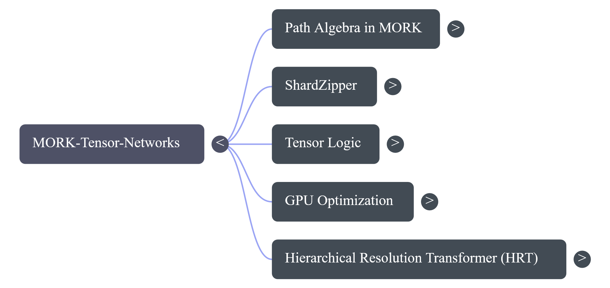
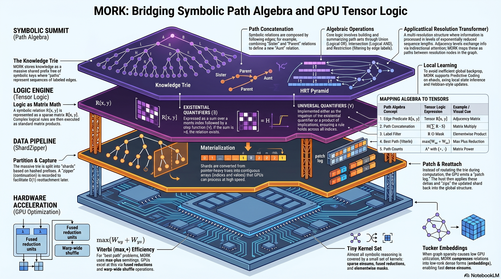

Architecture
MORKTensorNetworks ports Goertzel's "From Path Algebra in MORK to Tensor Logic on GPUs" (Oct 2025). The design is a four-layer stack that lowers symbolic knowledge into flat GPU arrays, organized into five categories. Both views below; each component links to its source file and current audit status.
The five categories

| Category | Paper § | Source file(s) | Audit status |
|---|---|---|---|
| Path Algebra in MORK | §1 | src/core/PathAlgebra.jl | ✅ ops correct; GPU-compose contract noted (F1/F2) |
| ShardZipper | §2, §5.6 | src/shard/ShardZipper.jl, src/shard/CrossShardJoin.jl | ⚠️ materialize! rebuilt (H3); Capture Γ_s / O(1) reattach deferred (SZ-3/M2) |
| Tensor Logic | §3, §3.5, §4 | src/core/Semirings.jl, src/core/PathAlgebra.jl | ✅ 4 paper semirings law-correct; PLN/Cost are extensions (N1) |
| GPU Optimization | §5 | src/gpu/SemiringKernels.jl, src/gpu/GPULayout.jl, src/decomp/TuckerDecomposition.jl | ✅ kernels + Tucker correct; GPU threshold/Boolean contracts noted (G2/H2/L9) |
| HRT | §6 | src/hrt/HRT.jl, src/hrt/PredictiveCodingTrainer.jl | ⚠️ forward pass + recon correct; PC learns only W_down+alpha (N4) |
The four-layer stack

The diagram reads top-down — symbolic knowledge is progressively lowered into flat GPU arrays.
1. Symbolic Summit — Path Algebra (§1)
The Knowledge Trie is MORK's shared prefix-tree of symbolic keys; a path is a sequence of labeled edges, and following a path composes relations (Sister∘Parent = Aunt). Algebraic operations (union / intersection / restriction) build and summarize path sets. The HRT Pyramid sits here as a multi-resolution structure (see layer 4).
Relations are decoded from trie atoms by ShardZipper._decode_relation (Rule-of-64 symbol decode — the H3 fix); path-algebra ops live in src/core/PathAlgebra.jl.
2. Logic Engine — Tensor Logic (§3)
A symbolic relation R(x,y) becomes a (sparse) matrix R[x,y]; logical rules execute as matrix products + a Heaviside H. Existential ∃y = row-sum then H; universal ∀y = 1 − H(Σ(1−Ψ)). The semiring-aware Heaviside _heaviside (the C2 fix) replaced a hardcoded >0 that was wrong for tropical semirings.
Mapping algebra → tensors
| # | Path Algebra | Tensor Logic | GPU primitive | Code |
|---|---|---|---|---|
| 1 | Edge predicate R(x,y) | R[x,y] | adjacency matrix | materialize! CSR |
| 2 | Path concatenation R∘S | H(Σ_y R[x,y]S[y,z]) | matrix multiply | path_compose |
| 3 | Label filter | R ⊙ Mask | elementwise product | path_restrict |
| 4 | Best path (Viterbi) | max_y(W[u,y]+W[y,v]) | max-plus reduction | path_viterbi |
| 5 | Path counts | A^k with (+,·) | matrix power | path_count |
3. Data Pipeline — ShardZipper (§2)
Partition & Capture: the trie is split into shards by prefix; a zipper continuation Γ_s is meant to enable O(1) reattach. Materialization: pointer-heavy subtries → contiguous CSR arrays. Patch & Reattach: the GPU emits a patch log of deltas; the host applies them and splices the shard back.
Code: src/shard/ShardZipper.jl (partition_trie, capture_shard, materialize!, compute!, patch_and_reattach!, should_adapt). Partition uses a child-mask iterator (the H4 fix). Capture does not yet record Γ_s and reattach does per-path writes, not the O(1) graft (SZ-3 / M2, tracked in TODO).
4. Hardware Acceleration — GPU Optimization (§5)
A tiny kernel set (sparse einsums, fused reductions, elementwise masks) covers almost all reasoning. Viterbi (max,+) uses fused reductions + warp-wide shuffles. Tucker embeddings densify low-rank relations when sparsity hurts GPU utilization.
Code: src/gpu/SemiringKernels.jl (SpGEMM/SpMV/reduce/mask/threshold), src/gpu/GPULayout.jl (CSR/BCSR), src/decomp/TuckerDecomposition.jl (2/3/N-mode HOOI). GPU Boolean (max/min) and threshold_kernel! (>thresh) are not semiring-aware on non-{0,1} / tropical data (H2 / G2 / L9) — sound for the active SumProduct/Boolean path, documented for the rest.
Cross-cutting — Local Learning (§6.4)
To avoid global backprop, HRT trains via Predictive Coding (local error + Hebbian updates) in src/hrt/PredictiveCodingTrainer.jl. Currently only W_down + fusion gates learn; attention/FFN weights are frozen (N4, tracked in TODO).
Audit & open items
The authoritative finding-by-finding record is docs/AUDIT_2026-06-04.md; tracked open items and owner decisions are in docs/TODO.md (both in the repo root docs/).
Verified at last audit: Pkg.test 129/129 (incl. Aqua), warm-REPL 120/120, Blue fixed point.